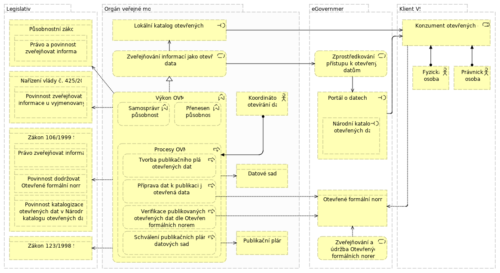

Když stavím nový IS nebo upravuji existující, co musím udělat, abych byl Open Data Ready?
- Vydáno
- Prosinec 2018
- Schválil
- Ing. Petr Kuchař, ředitel odboru Hlavního architekta eGovernmentu, MVČR
Obsah
- Shrnutí
- Co jsou a co nejsou otevřená data?
- Možnosti přípravy IS pro otevřená data
- Následná příprava dat k publikaci v podobě otevřených dat
- Zajištění kvality publikovaných dat
- Ochrana osobních údajů
- Právní aspekty
- Odbor Hlavního architekta eGovernmentu Ministerstva vnitra
- Pohled Archimate
Shrnutí
Pro zajištění publikace otevřených dat z IS je třeba:
- Zajistit možnost získávání kompletních dat z IS v podobě datových souborů ve strojově čitelném a otevřeném formátu
- Zajistit publikaci datových souborů na webu organizace nebo v jejím lokálním katalogu otevřených dat
- Opatřit je lidsky čitelnou dokumentací a strojově čitelným schématem
- Opatřit je otevřenými podmínkami užití
- Zaregistrovat je v Národním katalogu otevřených dat (NKOD)
Co jsou a co nejsou otevřená data?
Otevřená data jsou:
- Volně přístupná na webu jako datové soubory ke stažení ve strojově čitelném a otevřeném formátu - CSV, XML, JSON, RDF a další formáty s otevřenou specifikací
- Opatřená podmínkami užití neomezujícími jejich užití, viz návod na stanovení podmínek užití
- Evidovaná v Národním katalogu otevřených dat (NKOD) jako datové sady opatřené přímými odkazy na datové soubory, které je tvoří
- Úplný obsah databáze nebo agregovaná statistika
- Opatřená dokumentací
- Připravena s cílem co nejsnazšího strojového zpracování programátory apod.
- Opatřená kontaktem na kurátora pro zpětnou vazbu (chyby, žádost o rozšíření, apod.)
- Jsou publikovány dle otevřených formálních norem ve smyslu § 4b odst. 1 zákona č. 106/1999 Sb. o svobodném přístupu k informacím.
Pokud vaše datová sada nesplňuje všechny uvedené podmínky, nejedná se o otevřená data české veřejné správy podle zákona č. 106/1999 Sb., o svobodném přístupu k informacím, který definuje otevřená data ve svém § 3 odst. 11.
Otevřenými daty zejména není:
- odkaz na vyhledávací formulář určený pro koncové uživatele
- odkaz na novou stránku s dalšími informacemi
- odkaz na veřejné mapové rozhraní GIS
- odkaz na API umožňující přístup k jednotlivým záznamům či vyhledávání záznamů, nikoliv export kompletních dat
- datový soubor ve formátu PDF
- datový soubor ve formátu XLS formátovaný pro tisk nebo obsahující výpočty
- datový soubor v pseudo-CSV formátu (např. jiný oddělovač než “,”)
Možnosti přípravy IS pro otevřená data
Zásadní je mít přístup k datům IS. Provozovaný IS tedy musí:
- umožňovat přístup k databázi nebo
- mít možnost stahovat volitelně strukturovaná data (tabulky) z reportingového modulu systému nebo
- nabídnout API, ze kterého se dají pravidelně získávat kompletní data v podobě datových souborů
Export dat nebo API v otevřeném formátu - preferované řešení
IS má rozhraní pro pravidelný export dat nebo neomezené API, které organizace může vytěžit a získat kompletní data v jednom z otevřených formátů.
Struktura dat je zdokumentována jednak lidsky čitelným dokumentem a jednak strojově čitelným schématem.
V takovém případě jsou získaná kompletní data z IS připravena k publikaci formou otevřených dat.
Pokud se jedná o rozšíření existujícího IS, který neumožňuje export dat nebo nenabízí API ve strojově čitelném a otevřeném formátu a takovou úpravu nelze ve Vašem IS provést, využije se stávající export či API, které váš IS již umí (např. do MS Excel), a tento výstup se dále zpracuje do otevřeného formátu pomocí dalších nástrojů tak, aby bylo dosaženo stavu jako v případě přímého exportu do otevřeného formátu.
Následná příprava dat k publikaci v podobě otevřených dat
Data získaná z IS jedním z popsaných způsobů je následně třeba publikovat jako otevřená data.
To znamená minimálně:
- V případě API zajistit jeho vytěžení pro získání kompletních dat k publikaci (tj. případná přímá publikace API nenaplňuje podmínky otevřených dat)
- Zajistit pravidelnou aktualizaci získaných dat (dle charakteru dat to může být ve frekvenci např. denně, měsíčně nebo ročně)
- Publikovat získaná data na web ke stažení a následně publikovat každou jejich aktualizaci
- Opatřit je dokumentací, podmínkami užití a kontaktem na kurátora
- Katalogizovat je v Národním katalogu otevřených dat (NKOD)
K tomu lze využít nástrojů pro přípravu, publikaci a katalogizaci otevřených dat, jako je třeba LinkedPipes ETL.
Publikace otevřených dat by měla být zajištěna koncepčně na úrovni celé organizace.
Kompletní postupy jsou k dispozici na Portálu o datech, naleznete zde rovněž informace o školeních a workshopech, které Digitální a informační agentura k této problematice poskytuje.
Pro příklad vhodného způsobu zveřejnění datové sady v lokálním katalogu se lze podívat na katalog České správy sociálního zabezpečení (ČSSZ).
Zajištění kvality publikovaných dat
Kvalita publikovaných datových sad je klíčovým předpokladem pro následné zhodnocování a užívání publikovaných dat a je především vymezena:
- Kvalitou samotného obsahu datové sady – předmětem publikace musí být aktuální a úplné informace z původního zdroje s maximální možnou granularitou, a pokud tomu nebrání legislativa, tak bez agregací a modifikací.
- Kvalitou a standardizací datových schémat publikovaných datových sad, což především znamená:
- využívání a dodržování otevřených formálních norem při návrhu datových schémat a také opětovné používání sdílených "de facto" standardů datových schémat již publikovaných sad,
- nepublikování již publikovaných informací, místo toho využívání odkazů na již publikované datové entity v jiných datových sadách a publikovaných rejstřících,
- dodržování následujících pravidel pro publikaci atributů publikovaných datových entit:
- pokud název i hodnota atributu není ničím určena (neřídí se číselníkem, ani není odvozena z jiné entity) – zcela volná definice publikujícím,
- pokud název i hodnoty se řídí sdílenými číselníky - musí vycházet z těchto dostupných a definovaných číselníků,
- pokud název i hodnoty jsou určeny vztahem, nebo vyplývají ze vztahu na jinou publikovanou entitu – je nutné atribut nahradit vhodným vztahem na příslušnou entitu.
- Kvalitou a úplností metadat datové sady – struktura nutných popisných informací je určena stávajícími požadavky pro katalogizaci datových sad v NKOD.
- Kvalitou a zajištěním trvalé dostupnosti publikovaných datových sad poskytovatelů dat na trvalých URL a tak dlouho, jak je to možné.
Ochrana osobních údajů
Pokud jsou předmětem evidence informačního systému osobní údaje ve smyslu zákona č. 101/2000 Sb., o ochraně osobních údajů a nařízení (EU) č. 2016/679, Obecné nařízení o ochraně osobních údajů (GDPR), neznamená to, že nelze ze systému publikovat otevřená data.
Ve formátu otevřených dat lze zveřejnit následující:
- Pakliže se jedná o veřejnou evidenci či rejstřík a zvláštní právní předpis nařizuje zveřejnění informací, lze zveřejnit osobní údaje v podobě otevřených dat.
- Anonymizace či Pseudonymizace. Z dat se odstraní osobní údaje a případně se nahradí bezvýznamovým umělým identifikátorem. Data bez osobních údajů se pak mohou zveřejnit v podobě otevřených dat. Ovšem pozor, v závislosti na charakteru dat je třeba zkontrolovat, zda data ve své kombinaci neumožňují identifikaci konkrétní osoby i po odstranění zjevných osobních údajů. Zejména se může jednat o kombinace jako město, věk a pohlaví nebo podobné.
- Agregace. Data, která není možné nebo vhodné zveřejnit dle předchozího bodu, lze zveřejnit v agregované podobě. Tedy v podobě statistik. V případě zveřejnění statistik je žádoucí použít co nejjemnější možné členění.Tedy například počet přijatých podání uvádět raději po měsících namísto jen po letech.
Více informací naleznete na stránce o ochraně osobních údajů a GDPR ve vztahu k otevřeným datům.
Právní aspekty
Legislativní rámec otevřených dat v České republice tvoří jejich úprava obsažená v Zákoně č. 106/1999 Sb., o svobodném přístupu k informacím a v Nařízení vlády č. 425/2016 Sb., o seznamu informací zveřejňovaných jako otevřená data, které stanovuje vybraným orgánům veřejné správy povinnost zveřejňovat data z konkrétních jimi spravovaných informačních systémů ve formě otevřených dat.
Více informací o strategických dokumentech, akčních plánech a souvisejících předpisech ČR i EU naleznete na stránce věnované legislativnímu prostředí otevřených dat.
Odbor Hlavního architekta eGovernmentu Ministerstva vnitra
Vrcholným orgánem ve veřejné správě pro otevřená data je odbor Hlavního architekta eGovernmentu ministerstva vnitra (OHA), který má danou problematiku v gesci. OHA plní koordinační roli, věnuje se právní úpravě otevřených dat a dohlíží na zachování principů otevřených dat u nových systémů veřejné správy.
Koordinační role je ztělesněna zejména Národním koordinátorem otevřených dat, který zprostředkovává informace a kontakty mezi orgány veřejné správy a poskytuje jim podporu a součinnost.
Veškeré informace o otevřených datech jsou k nalezení na Portálu o datech, který OHA MVČR spravuje.
Na portále najdou potřebné informace všechny zainteresované role, ať už jde o uživatele či poskytovatele otevřených dat, od přehledových informací přes technické návody, příklady dobré a špatné praxe až po detailní návod, jak v konkrétní instituci zavést správné procesy vedoucí k udržitelnému poskytování otevřených dat.
OHA MVČR také vydává Otevřené formální normy (OFN), které slouží jako standardy pro jednotlivé oblasti publikace otevřených dat.
OHA v rámci vydávání stanovisek k IT projektům kontroluje u Informačních systémů veřejné správy, ať už nově vznikajících či u rozšiřovaných a modernizovaných stávajících, zachování principů otevřených dat, a to zejména princip "open data ready".
U schvalovaných systémů tedy musí být zajištěn přístup k veškerým datům vedeným v databázích dotčených předmětem projektu ve strojově čitelném a otevřeném formátu, tento přístup musí být zajištěn bez dodatečných finančních nákladů a žadatel musí mít možnost se zpřístupněnými daty libovolně nakládat.
OHA dále kontroluje, zdali budou tato data zveřejňovaná ve formátu otevřených dat.
Pohled Archimate
V této sekci naleznete přehled otevřených dat v kontextu OVM namodelovaný v jazyce Archimate.
Business

Na byznys vrstvě se nachází legislativa dotýkající se otevřených dat a procesy a objekty, které se zapojují do publikace otevřených dat.
Jednotlivé procesy OVM jsou ve větším detailu popsány na Portálu o datech, kde se také nalézají Otevřené formální normy, které OVM při publikaci otevřených dat dodržuje.
Klient pak data očekává ve formátu popsaném Otevřenou formální normou.
eGovernment provozuje Portál o datech s Národním katalogem otevřených dat, kam jsou otevřená data OVM registrována, a kde je klient VS hledá.
OVM navíc provozuje Lokální katalog otevřených dat, který je tím národním harvestován.
Aplikační
 Na aplikační vrstvě hraje hlavní roli datový Portál OVM, na kterém jsou zveřejněna otevřená data OVM a který obsahuje Lokální katalog otevřených dat.
Do něj jsou katalogizována otevřená data OVM a z něj metadata přebírá Národní katalog otevřených dat.
Klient VS pak přistupuje přímo k souborům či API poskytovaným přes Portál OVM.
Na aplikační vrstvě hraje hlavní roli datový Portál OVM, na kterém jsou zveřejněna otevřená data OVM a který obsahuje Lokální katalog otevřených dat.
Do něj jsou katalogizována otevřená data OVM a z něj metadata přebírá Národní katalog otevřených dat.
Klient VS pak přistupuje přímo k souborům či API poskytovaným přes Portál OVM.